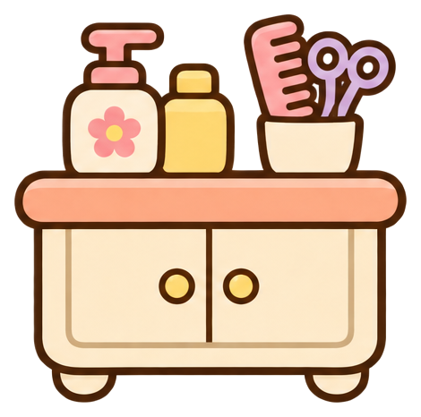
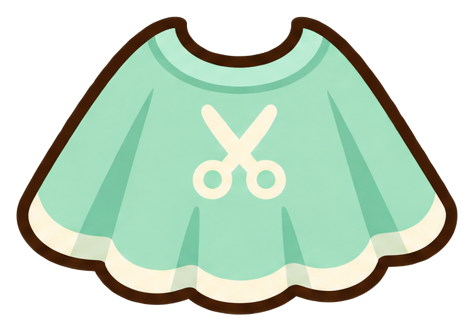
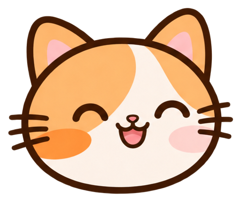
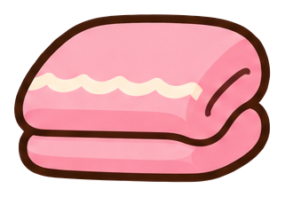

מסדרים את הכלים…
עוד רגע מתחילות.
איזה אזור נקצר?
קחי כלי מהמעמד והעבירי אותו לשיער
מסדרים את הכלים…
המראה שפופה מבקשת
אפשר להוסיף את הטאץ׳ שלך.
כל מראה מספר סיפור
אלבום התסרוקות שלך
המראה הראשון שלך יחכה כאן בסיום הביקור.
דברים חדשים לסלון
למקלדת: בחרי כלי באמצעות Tab ו־Enter, ורווח בעמדה מטפל באזור הבא. Escape מחזיר את הכלי למקום. אזור התספורת נבחר בכפתורי האזורים בלבד.